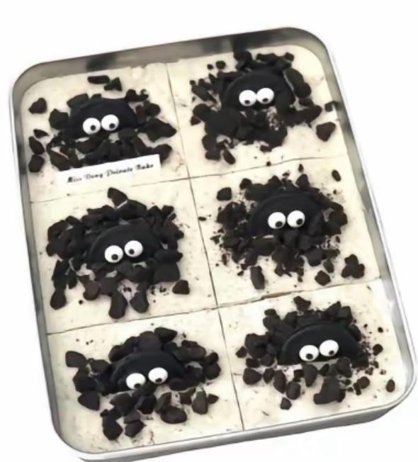

Tiramisu

This is a simple tiramisu recipe.
Ingredients:
- 6 egg yolks
- 3/4 cup sugar
- 2/3 cup milk
- 1 1/4 cups heavy cream
- 1/2 teaspoon vanilla extract
- 1 pound mascarpone cheese
- 1 cup strong brewed coffee, cooled
- 2 tablespoons rum
- 24 ladyfingers
- Cocoa powder for dusting
Instructions:
- In a medium saucepan, whisk together egg yolks and sugar until well blended. Whisk in milk and cook over medium heat, stirring constantly, until mixture boils. Boil and stir for 1 minute. Remove from heat and allow to cool.
- In a separate bowl, beat heavy cream with vanilla until stiff peaks form. Gently fold mascarpone cheese into the egg yolk mixture until smooth. Fold in the whipped cream.
- In a small bowl, combine coffee and rum. Dip each ladyfinger into the coffee mixture for 1-2 seconds, ensuring they are soaked but not soggy. Arrange half of the soaked ladyfingers in the bottom of a 9x13 inch dish. Spread half of the mascarpone mixture over the ladyfingers. Repeat with remaining ladyfingers and mascar
Home